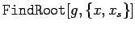
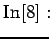
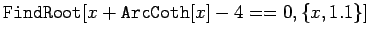
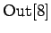
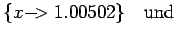
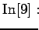
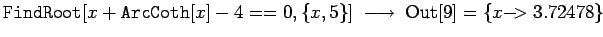

Inhalt Index DeskTop Bronstein

 Computeralgebrasysteme Anwendungen von Computeralgebrasystemen Lösung von Gleichungen und Gleichungssystemen Mathematica
Computeralgebrasysteme Anwendungen von Computeralgebrasystemen Lösung von Gleichungen und Gleichungssystemen Mathematica


Mathematica ist in der Lage, auch transzendente Gleichungen zu lösen. In der Regel ist dies symbolisch nicht möglich. Außerdem können solche Gleichungen oft unendlich viele Lösungen haben. Daher sollte man Mathematica in solchen Fällen eine Vorgabe für die Umgebung machen, in der eine Lösung gefunden werden soll. Das ist mit der Anweisung  möglich, wobei xs der Startwert für die Lösungssuche ist.
| Beispiel |
|  | = |  | |
|  | = |  | |
|  | = |  |